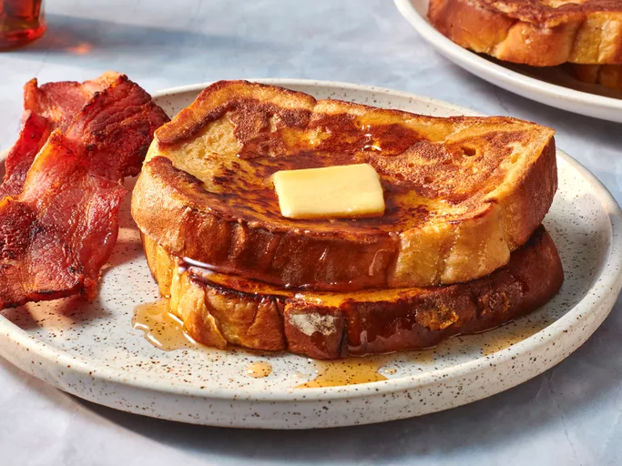

French Toast

Description
This is the best French toast recipe. It's different because it uses flour. I have given it to some friends and they've all liked it better than the French toast they usually make!
Ingredients
- Flour: This fluffy French toast batter starts with ¼ cup all-purpose flour.
- Milk: Milk adds moisture and richness to the batter. You can substitute half-and-half, cream, or your favorite alternative milk if you like.
- Eggs: Of course, you’ll need eggs for French toast! Three eggs bind the batter together and give it a rich texture.
- Sugar: A tablespoon of white sugar lends welcome sweetness to this decadent breakfast recipe.
- Vanilla: A teaspoon of vanilla extract adds complexity and takes the flavor up a notch.
- Cinnamon: Ground cinnamon lends coziness and warmth. .
- Salt: A pinch of salt enhances the flavors of the other ingredients, but it won’t make your French toast taste salty:
- Bread: You’ll need 12 slices of your favorite thick-sliced bread. Good choices include brioche, sourdough, French bread, or challah.
Steps
- Slowly whisk the milk into the flour, then whisk in the remaining ingredients.
- Saturate the bread slices in the batter.
- Cook the French toast on a lightly oiled griddle or pan until golden on both sides.
Home